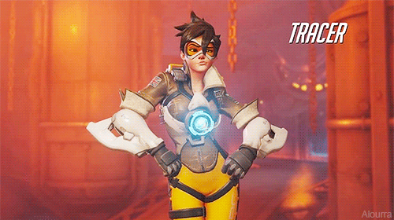
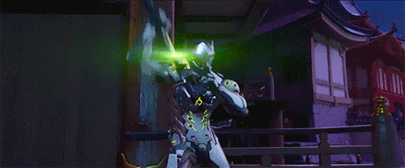
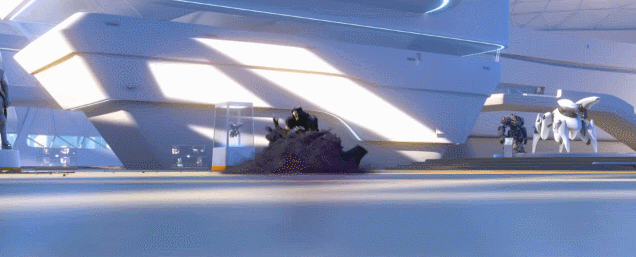
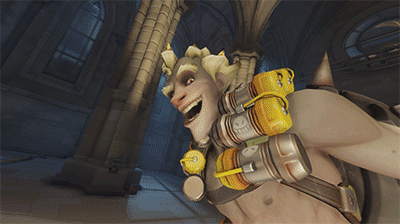
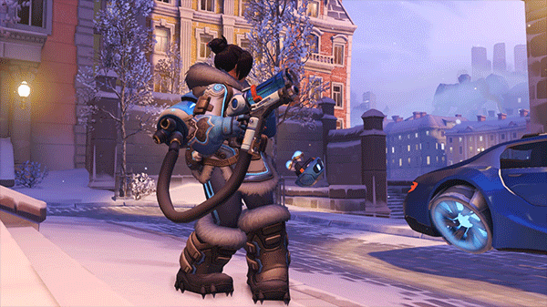
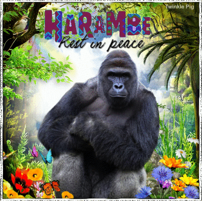
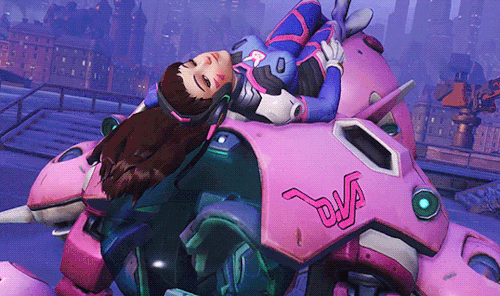
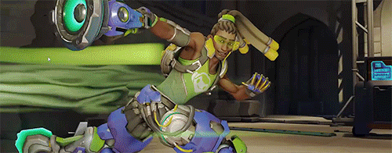
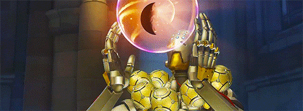
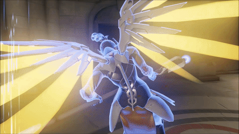

Characters
Offense:
Tracer
Moves: Tracer has 2 pulse guns that allows her to shoot at very fast speeds and does tons when she's close to you. She also has three charges of Blink which allows her to teleport a short distance. Her secondary ability is Recall which allows her to go back 3 seconds in the past and heal up. Her ultimate ability, Pulsebomb gives her a bomb that can attach to walls or other people and is a one shot.

Genji
Moves: Genji has 3 shurikens that he throws either in a straight line or spread out. His first ability is he can dash and damage opponents or get out of trouble. His second ability is he can deflect any projectiles even other people's ultimates. His ultimate allows him to take out his sword of death and calls the dragon of the south upon it and just swings it around.(Passive: Can double jump and climb walls)

Reaper
Moves: Has dual shotguns that are most effective at close range. His first ability makes him invincible for 4 seconds and he gains movement speed in this state but can not shoot or attack. His second ability enables him to teleport anywhere in a medium range radius. His ultimate death blossom allows him to spin in circles while shooting constantly doing high damage destroying all enemies in his ultimate range.(Passive: whenever an opponent dies Reaper picks up their souls and heals up.)

Defense:
Hanzo
Moves: Has bow and arrows and is a sniper. His first ability gives him an arrow, Sonic Arrow and if you shoot it at the wall you can see opponents through the wall and around it. His second ability, Scatter arrow, Hanzo shoots a fragmenting arrow that ricochets off walls and objects and can strike multiple targets at once. (Passive: He can climb walls like his brother Genji)

Junkrat
Moves: Junkrat's main attack is his frag launcher, which lobs grenades that does significant and devastating damage. His first ability, concussion mine, allows junkrat to damage enemies and propel him into the air. Junkrat's second ability the steel trap is a very good combo with the mine, it holds an enemy in place for a little while, immobilizing and damaging. His ultimate rip tire, lets Junkrat control a tire full of explosives and when he activates it he can destroy many enemies in the vicinity. (Passive: drops his bombs when he dies and destroys anyone that is on his dead body.)

Mei
Moves: Mei's main attack is an endothermic blaster, it unleashes a concentrated, short range stream of frost that damages, slows, and eventually freezes opponents in place. Her blaster also allows her to shoot an icicle to hit enemies at mid distance. Her first ability cyro- freeze surrounds herself with a block of ice. This allows her to heal and not take damage. Her second ability ice wall allows Mei to summon a wall of ice, it obstructs sight, blocks attack, and stops movement. When using her ultimate blizzard, Mei deploys a weather modification drone that freezes enemies instantly. (Passive: makes people rage quit).

Tanks:
Winston (Harambe)
Moves: Winston's main attack is his tesla cannon, it is a short-range electric barrage. His first ability is jump pack, this allows winston to lunge through the air, dealing significant damage staggering nearby enemies. Winston's second ability is barrier projector which gives him a bubble shaped force field that protects. Winston's ultimate primal rage, he boosts his health which makes him very difficult to eliminate, strengthening his melee attack, and allows him to use his jump pack more often.

D.Va
Moves: D.Va's main attack is fusion cannons, her mech is equipped with twin short ranged rotating cannons. Her main attack after her mech gets destroyed is a light gun, a mid-range automatic blaster. D.Va's first ability is boosters, this allows her to turn and change directions, barreling through enemies. Her second ability defense matrix, allows her to block and shoot incoming projectiles. Her ultimate self destruct, explodes her mech dealing massive damage to nearby enemies. She can also call in a new mech if it was damaged or destroyed (passive).

Zarya
Moves: Zarya's main attack is particle cannon, which unleashes a short-range beam of destructive energy. She can also lob an explosive charge that is capable of hitting multiple enemies. Her first ability particle barrier that shields Zarya against incoming attacks. Redirecting their energy to enhance her weapon weapon damage and width of her beam. Zarya's second ability surrounds one of her teammates with an energy barrier that simultaneously absorbs fire and boosts the power of her cannon. Her ultimate gravitation surge draws in enemies and damages while they're trapped.

Support:
Lucio
Moves: Lucio's main attack is sonic amplifier, this allows him to shoot out sonic projectiles or knock enemies back with sound. His first ability crossfade allows lucio to play two songs, one regenerates health and the other energizes his teammates (speed boost). Lucio's second ability amp it up allows him to make his music stronger, so it heals quicker. His ultimate sound barrier boosts all his teammates health up for a brief amount of time. This can let his team withstand almost any attack depending on when they get hit. Lucio's passive is wall ride, this allows him to run on walls, this increases mobility and helps him get out of trouble and bad situations.

Zenyatta
Moves: Zenyatta's main attack is his orb of destruction, he can shoot out one orb at a time or charge up and shoot multiple at once. His first ability harmony orb lets Zenyatta shoot out a healing orb, this can heal teammates up all the way depending on if Zenyatta keeps it on. His second ability orb of destruction, amplifies the amount of damage taken by an opponent. His ultimate transcendence allows Zenyatta to be indestructible while healing all nearby teammates, but Zenyatta can't attack while in that form.

Mercy
Moves: Mercy's main attack is her caduceus blaster, this shoots a round from her side arm, which is used for personal defense. Her first ability is caduceus staff, allows mercy to heal and damage boost teammates. Her second ability, angelic descent allows her to slows the speed of her enemies from great heights. Mercy's ultimate resurrect gives mercy the ability to revive all her nearby allies back into the fight at full health.
